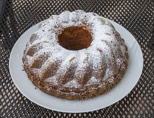

The Polish and Belarusian noun babka and the Belarusian, Ukrainian, Macedonian, Bulgarian and Russian baba means "grandmother" or "old woman", and as applied to the pastry probably refer to its shape, a tall cylinder, sometimes with corrugations resembling a skirt’s pleats.[1] The name of the pastry entered English from Polish, via French, although "babka" is also sometimes used in its original sense ("grandmother"), especially among those of Central and Eastern European descent